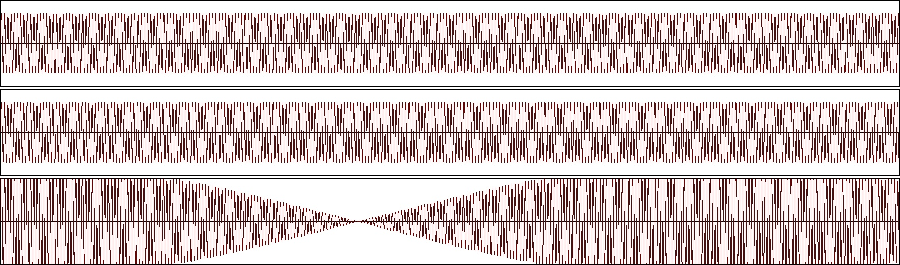

Audacity
Audacity ist ein Open-Source Softwareprojekt. Die Applikation ermöglicht es, Audiodaten
aufzunehmen oder zu erzeugen, zu bearbeiten und zu speichern. Dabei stehen viele
Funktionen zur Verfügung, mit denen wir uns (direkt oder indirekt) auch in der
SIGA-Vorlesung beschäftigen.
Installation
Audacity kann einfach von der offiziellen Website unter https://www.audacity.de/downloads/
heruntergeladen werden. Es bietet vielfältige Funktionen wie die Aufnahme und Bearbeitung von
Audiodateien, unterstützt verschiedene Dateiformate und ermöglicht deren Konvertierung. Darüber
hinaus bietet Audacity Tools für Spektralanalysen, Spektrogramme und weitere Analysefunktionen, die
besonders im Bereich der Signaltheorie von Bedeutung sind.
Schwebung
Was ist Schwebung?
Schwebung ist ein akustisches Phänomen, das auftritt, wenn zwei Töne ähnlicher, aber nicht
identischer Frequenz gleichzeitig gespielt werden. Da ihre Frequenzen nur leicht unterschiedlich
sind, überlagern sich die Wellen der beiden Töne und interferieren miteinander.
Das Ergebnis dieser Interferenz ist eine Welle, deren Amplitude (oder Lautstärke) sich
periodisch verändert - sie wird lauter und leiser in einem Muster, das als Schwebung bezeichnet
wird. Die Schwebungsfrequenz, also wie schnell diese Lautstärkeänderungen auftreten, entspricht
der Differenz der Frequenzen der beiden Töne. Diese Schwebungen sind hörbar als eine Art Wobbeln
oder Pulsieren des Tones.
Umsetzung in Audacity
- Mono-Spuren hinzufügen: Erzeugen > Klang
- Generierung zweier Sinustöne, einer mit einer Frequenz von 400 Hz, der andere mit 442 Hz; alternativ hier herunterladen und importieren:
400 Hz
442 Hz
- Tonspuren auswählen und Mischen: Spuren > Mix > In neue Spur mischen und rendern
